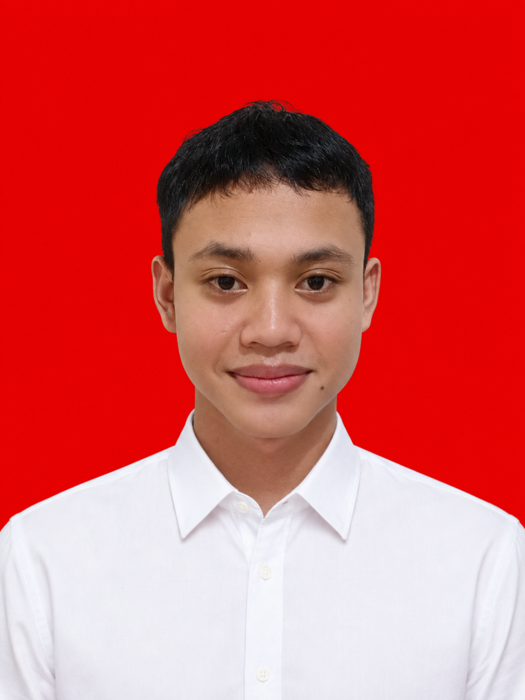
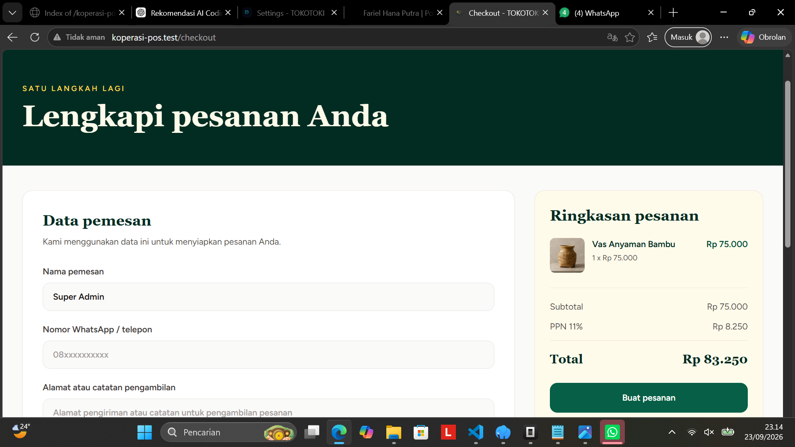

Web Development
- HTML
- CSS
- JavaScript
- Dasar React.js
JUNIOR WEB DEVELOPER
Pelajar SMK Negeri 1 Jenangan jurusan Rekayasa Perangkat Lunak yang sedang membangun dasar pengembangan web dan administrasi digital. Ini tempat saya menampilkan perjalanan belajar dan karya saya.

TENTANG SAYA
Saya Fariel Hana Putra, pelajar SMK Negeri 1 Jenangan Ponorogo jurusan Rekayasa Perangkat Lunak. Saya terbiasa teliti dalam mengelola data dan administrasi digital — mulai dari mengelola data akun, menyusun Google Spreadsheet, mengatur Google Family Link, sampai membuat desain template untuk kebutuhan penjualan digital.
Saya berkomitmen menjaga profesionalisme dan integritas dalam setiap pekerjaan. Saya bisa bekerja mandiri maupun dalam tim, cepat beradaptasi, dan selalu berusaha menghasilkan kerja yang akurat dan berkualitas.
PROFIL PROFESIONAL
Target: Junior Web Developer
Pelajar SMK Negeri 1 Jenangan jurusan Rekayasa Perangkat Lunak dengan dasar pengembangan web (HTML, CSS, JavaScript, dasar React.js dan Node.js) serta pengalaman pengelolaan data dan administrasi sebagai Operator Akun dan Admin Warehouse di Vexagame. Terbiasa bekerja teliti, mandiri maupun dalam tim.
PENDIDIKAN
2024 — Sekarang
Jurusan Rekayasa Perangkat Lunak. Membangun dasar pengembangan web dan administrasi digital.
2021 — 2024
Pendidikan menengah pertama.
Pendidikan Dasar
Pendidikan dasar.
PENGALAMAN
Saat ini · Vexagame
Vexagame
Administrasi Digital
Pengelolaan data akun, penyusunan Google Spreadsheet, pengaturan Google Family Link, serta pembuatan desain template untuk kebutuhan penjualan digital.
KEAHLIAN
KARYA / PORTFOLIO




Website toko produk kerajinan tangan dan dekorasi dengan katalog produk, kategori, pencarian, detail produk, keranjang, checkout, transaksi, dan dashboard admin. Dibangun dengan Laravel, Inertia.js, React.js, Tailwind CSS, dan MySQL.
SERTIFIKAT / PRESTASI
Sertifikat partisipasi sebagai peserta Kunjungan Industri SMKN 1 Jenangan pada 5 Januari 2026 di PT Educa Sisfomedia Indonesia, diterbitkan oleh Gamelab Indonesia dan Educa Studio.
KEGIATAN

Foto bersama pada awal kegiatan magang di PT. Vexa Digital Solutions.

Foto bersama di lingkungan kerja setelah direkrut menjadi karyawan.

Dokumentasi perjalanan menuju lokasi kunjungan industri.

Dokumentasi setelah mengikuti kunjungan industri di Jogja.

Bertugas sebagai kru dokumentasi pada simulasi pemilihan di kelas.

Dokumentasi suasana simulasi pemilihan di kelas.

Terlibat dalam pengambilan video promosi jurusan di laboratorium komputer.

Membuat konten review kuliner untuk media sosial.

Membuat konten kreatif untuk media sosial.

Dokumentasi konten review yang dibuat sebagai tugas.

Berwisata perahu bersama teman di Telaga Ngebel, Ponorogo.

Membantu penggantian velg sepeda motor.
ARTIKEL / BLOG
Beberapa catatan, pengalaman, dan hal yang saya pelajari selama mengembangkan project dan belajar web development.
Cerita di balik project TOKOTOKI — dari konsep toko kerajinan, fitur yang dibuat, sampai hal yang saya pelajari selama mengembangkannya.
Baca ArtikelHal-hal yang saya pelajari dari proses development: struktur project, validasi, autentikasi, sampai debugging dan testing.
Baca ArtikelPerjalanan saya sebagai siswa RPL: dari HTML, CSS, dan JavaScript, mencoba backend dan database, sampai membuat project pertama.
Baca ArtikelKONTAK
Silakan hubungi saya melalui email atau WhatsApp.
Klik foto untuk memperbesar.